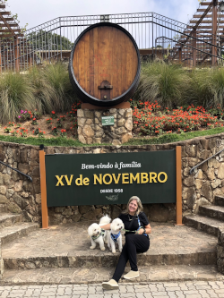
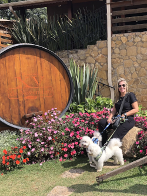
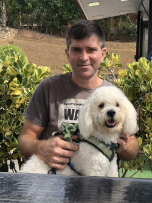
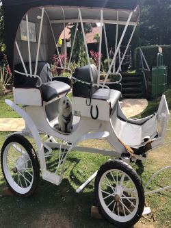
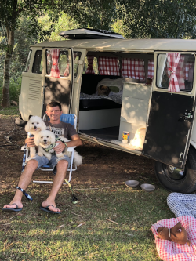
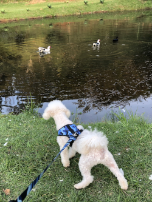
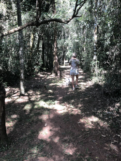

São Roque - SP
Conhecida como cidade do Vinho, a cidade foi fundada em 16 de Agosto de 1657 pelo nobre capitão paulista Pedro Vaz de Barros, conhecido também como Vaz Guaçu, O Grande.
O nome São Roque é devido a devoção de seu fundador por este santo. Atraído pela região, estabeleceu-se com sua família começando assim, a cultivar trigo e uva.
Em 1832, São Roque foi elevada à condição de vila e, em 1864, à categoria de município. E, em 1990, devido ao seu grande potencial no cenário histórico, artístico, ecológico e cultural, foi transformada em Estância Turística.
População: 93076 (2021)
São Roque foi o destino para a nossa 1ª viagem de Kombi e ... amamos.
O passeio na Rota do Vinho foi incrível e como uma boa cidade Pet Friendly, a maioria das vinícolas aceitam a entrada dos pets.
 Primeira Parada Rota do Vinho
Primeira Parada Rota do Vinho- Vinicola XV de Novembro
- Vinicola XV de Novembro
- Vinicola XV de Novembro
- Vinicola XV de Novembro
 Vila Don Pato
Vila Don Pato- Vila Don Pato
 Vinicola Goes
Vinicola Goes Pausa para o chopp
Pausa para o chopp- Vapo Camping
- Vapo Camping
- Trilha